Edit Mode - Faces menu
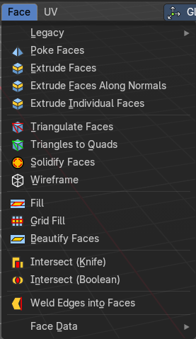
The faces menu is just visible for Mesh objects. It provides tools to work with faces.
Legacy
The legacy sub menu contains tools that exists in the tool shelf already.
It's the old way to do things. Different to the tools in the tool shelf, these tools are usually modal. And performs once. You have to call them again in case you want to repeat the tool.
Or, in case of the Bridge Faces tool, is a double to another existing tool. The Bridge Faces tool is nothing else than the Bridge Edge Loops tool from the Edge menu. Just with another name, and working in Face selection mode. We promised to provide the same functionality than Blender. And so we have to provide this tool too.
Inset Faces
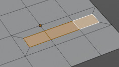
Inset insets edges into the selected faces. Think of it as an extrude inwards the face.
Activate the tool, drag the mouse. But carefully. The control is not the best. You better adjust the amount in the last operator.
Last Operator Inset Faces
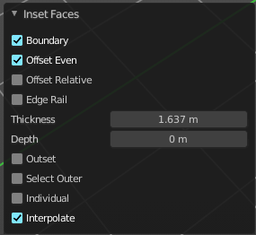
Boundary
With Boundary ticked you will get the connect edges in the corners. Without the edges ends straight.
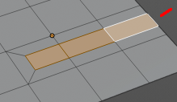
| Entry | What it does |
|---|---|
| Offset Even | Scales the offset to give more even thickness. |
| Offset Relative | Scales the offset by surrounding geometry. |
| Edge Rail | Inset the region along existing edges. |
| Thickness | Thickness adjusts the thickness of the inset geometry. |
| Depth | With depth you can bevel the inset geometry. It is then not longer co planar to the initial face. |
| Outset | With outset ticked the Inset will not extrude inwards but outwards. |
| Select Outer | With Select Outer the outer ring will be selected after the Inset. |
| Individual | Inset every face individually. |
| Interpolate | Blend Face Data across the inset. |
Bridge Faces
The Bridge Faces tool bridges selected faces, and adds polygons between them. You need to have at least two faces selected.
This tool is basically the Bridge Edge Loops tool, just that it operates in Face mode.
Note that this tool just shows when you are in Face Select Mode.
Last Operator Bridge Edge loops
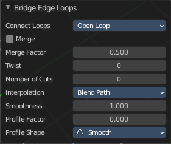
Connect Loops
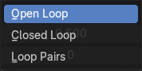
Choose the method how to deal with bridging multiple loops.
| Entry | What it does |
|---|---|
| Merge | With merge ticked it will not create a bridge face, but merge the selected edges. · Merge Factor: The merge factor determines at which distance between the selected edges the merge happens. 0.5 is the middle of the selected edges. |
| Twist | The twist offset for closed loops. |
| Number of Cuts | Adds cuts to the bridge face. |
Interpolation
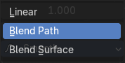
Choose the interpolation mode for the cuts.
| Entry | What it does |
|---|---|
| Smoothness | Adjust the smoothness for the cuts. |
| Profile Factor | Adjust the profile factor for the cuts. |
Profile shape
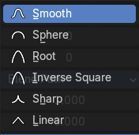
Adjust the profile shape for the cuts.
Poke Faces
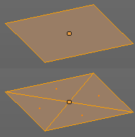
Splits the selected faces to create a triangulated geometry.
Last Operator Poke Faces
Poke Offset
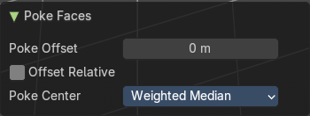
Normally the center vertice of the poke operation is planar with the rest. Adjust an offset.
Offset Relative
Scale the offset by surrounding geometry.
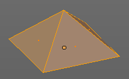
Poke Center
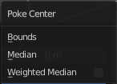
Poke Center is a drop-down box choose what the center of the poke operation should be. You can choose between weighted mean, mean and bounds.
Triangulate Faces
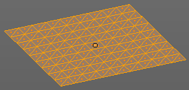
Triangulate Faces triangulates the faces of the selected geometry.
Last Operator Triangulate Faces
Quad Method
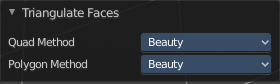
Choose how quads should be triangulated.
Shortest diagonal
Splits the quads based on their distance between vertices.
Fixed Alternate
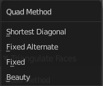
Splits the quads on the second and fourth vertice.
| Entry | What it does |
|---|---|
| Fixed | Splits the quads on the first and third vertice. |
| Beauty | Tries to optimize the triangulation. |
Polygon Method
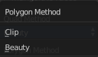
Choose how N-Gons should be triangulated.
| Entry | What it does |
|---|---|
| Clip | Splits the polygons with an ear clipping algorithm. |
| Beauty | Tries to optimize the triangulation. |
Triangles to Quads
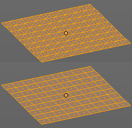
Tris to quads tries to convert triangulated geometry back to a quad geometry by removing the edges inside of the quads.
Last Operator Tris to Quads
Max Face Angle
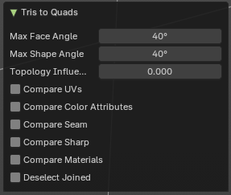
Adjust the threshold to adjacent triangles.
| Entry | What it does |
|---|---|
| Max Shape Angle | Adjust the shape angle limit. |
| Topology influence | How much to priorize regular grids of qads as well as quads that touch existing quads. |
| Compare UV's | Takes the UV patches for the calculation into account. Border geometry will not be calculated. |
| Compare Color attributes | Takes the Vertex colors for the calculation into account. Border geometry will not be calculated. |
| Compare Seam | Takes the Vertex colors for the calculation into account. Border geometry will not be calculated. |
| Compare Sharp | Takes the as sharp marked edges for the calculation into account. Border geometry will not be calculated. |
| Compare Materials | Takes the Materials colors for the calculation into account. Border geometry will not be calculated. |
| Deselect Joined | Only select remaining triangles that were not merged. |
Solidify Faces
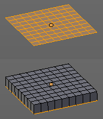
Gives the selected faces a thickness, and makes it solid.
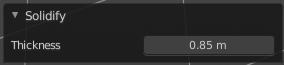
There is also a Solidify modifier available.
Last Operator Solidify
Thickness
Adjust the thickness. You can scale also into the negative range.
Wire Frame
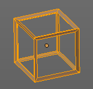
Wire frame grabs the edges of the faces and turns them into tubes.
Last Operator Wire Frame
Boundary
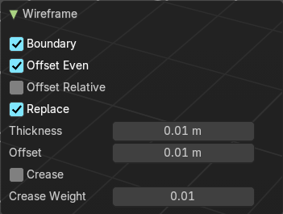
Inset Face Boundaries.
| Entry | What it does |
|---|---|
| Offset Even | Scales the offset to give more even thickness. |
| Offset Relative | Scales the offset by surrounding geometry. |
| Replace | Removes the source geometry. |
| Thickness | Adjust he thickness of the tubes. |
| Offset | Adjust the offset of the tubes. |
| Crease | Crease adds close edges so that you have sharp corners when you use Subdivision Surface. |
| Crease Weight | Adjust the crease weight. |
Fill
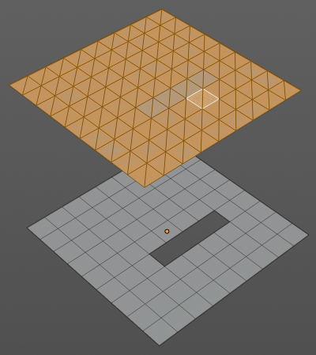
Fill closes holes in the selected mesh geometry, and triangulates the faces.
Last Operator Fill
Beauty
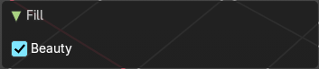
Uses the best possible triangulation.
Grid Fill
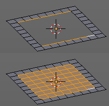
Grid Fill allows you to fill two edge loops with quad geometry that follows the surrounding geometry.
Usage: select two opposite edge loops. Then perform the tool.
Last Operator Grid Fill
Span
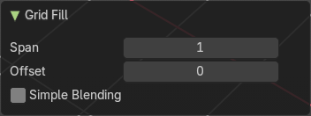
Number of sides.
| Entry | What it does |
|---|---|
| Offset | Define an offset |
| Simple Blending | Uses a simple interpolation. Faster but less accurate. |
Beautify Faces
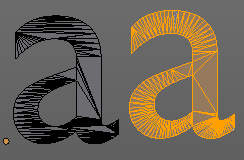
Beautify faces tries to optimize triangulation.
Last Operator Beautify Faces
Max Angle
Set an angle limit.
Intersect (Knife)
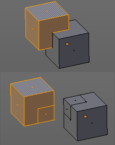
Intersect creates edges where geometry intersects.
This operation happens in Edit mode, and so all parts must be in the same mesh.
Last Operator Intersect
Source
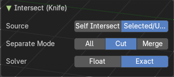
| Entry | What it does |
|---|---|
| Selected/Unselected | works between the selected and unselected geometry. |
| Self Intersect | works on the overlapping geometry of the mesh. |
Separate Mode
| Entry | What it does |
|---|---|
| All | Splits the geometry at the new edge. |
| Cut | keeps each side of the intersection separate without splitting the faces in half. |
| Merge | Merge all geometry from the intersection. Merge merges all the geometry from the intersection. |
Solver
Float
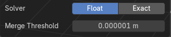
Merge Threshold
Adjust the merge threshold. Increase it when some geometry is not calculated. But keep it small for fast calculation.
Exact
Slower solver with best result for coplanar faces.
Intersect ( Boolean )
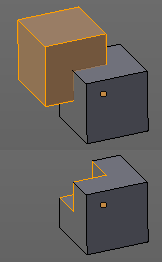
Intersect (Boolean) performs a Boolean operation between the selected and unselected mesh parts.
This operation happens in Edit mode, and so all parts must be in the same mesh.
Last Operator Intersect (Boolean)
Boolean Operation
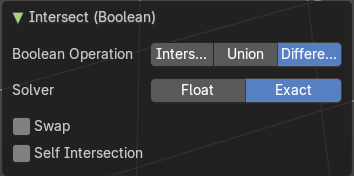
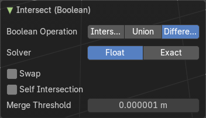
Choose the Boolean method.
Intersect
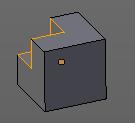
Subtracts the source geometry from the target geometry.
Union
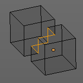
Unions the source geometry with the target geometry. Geometry inside the source and target geometry gets removed.
Difference
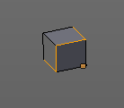
Removes all geometry but the overlapping geometry.
Solver
| Entry | What it does |
|---|---|
| Float | Swap: Inverts source and target geometry. · Self intersection: Enable self union / self intersection. · Merge Threshold: Adjust the tolerance for the Boolean operation. Increase it when some geometry is not calculated. But keep it small for fast calculation. |
| Exact | Swap: Inverts source and target geometry. · Self intersection: Enable self union / self intersection. |
Weld Edges into Faces
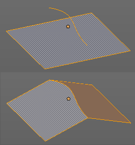
This tool incorporates loose wire edges into selected faces.
You need a loose edge geometry to get it to work. By converting a curve to a Mesh geometry for example. You need to join the edge into the mesh where you want to use it. The operation happens in Edit mode.
In edit mode select the edge and the face where you want it to join. And then perform the tool.
Face Data
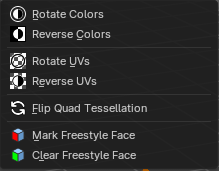
Rotate Colors
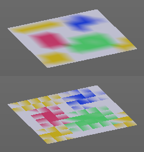
Rotates the vertex colors for the selected geometry. This tool requires to have vertex colors painted at the mesh.
Note that there is no way to display vertex colors in Edit mode. So you need to switch to Vertex paint mode to see the result.
Last Operator Rotate Colors
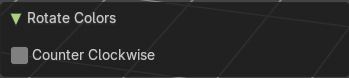
Counter Clockwise
The tool rotates clockwise by default. With this option ticked the rotation happens counter clockwise.
Reverse Colors
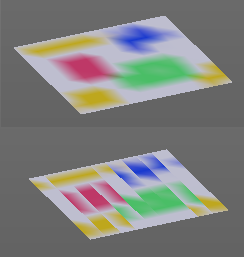
Reverses the vertex colors.
Note that there is no way to display vertex colors in Edit mode. So you need to switch to Vertex paint mode to see the result.
Rotate UV's
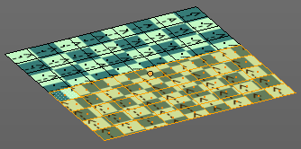
Rotates the UV space for the selected geometry by 90 degrees. This tool requires to have a working UV mapping.
Last Operator Rotate UV's
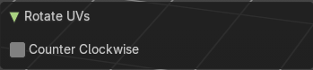
The tool rotates clockwise by default. With this option ticked the rotation happens counter clockwise.
| Entry | What it does |
|---|---|
| Flip Quad Tesselation | Flips the tesselation of the selected quads. |
| Reverse UV's | Reverses the UV Space for the selected geometry. This tool requires to have a working UV mapping. |
| Mark Freestyle Face | Mark selected Faces for exclusion from Freestyle Feature edge detection. Freestyle is a cartoon renderer that is also included in Bforartists. |
| Clear Freestyle Face | Unmark selected Faces for exclusion from Freestyle Feature edge detection. Freestyle is a cartoon renderer that is also included in Bforartists. |